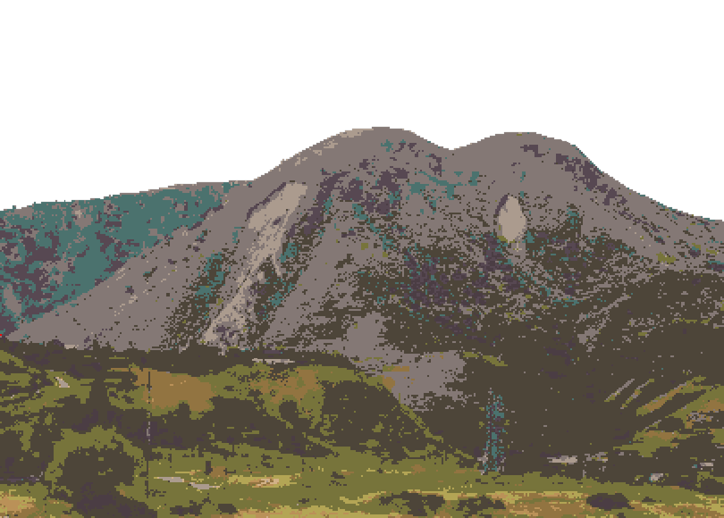

Hi, my name is Dias. I am a web developer from Talgar, Almaty.
I create web interfaces for GIS projects at Insitute of Ionosphere (Almaty), such as interactive maps, geoportals, and tools for working with spatial data. I focus on making complex geodata practical and easy to use.
I also have basic knowledge of DevOps and understand how web projects are deployed and maintained.
Outside of work, I enjoy playing Valorant and campaign.